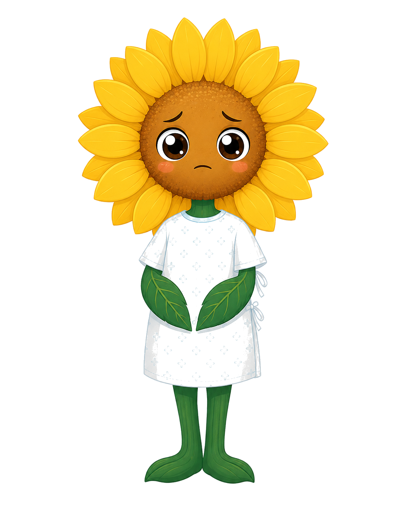
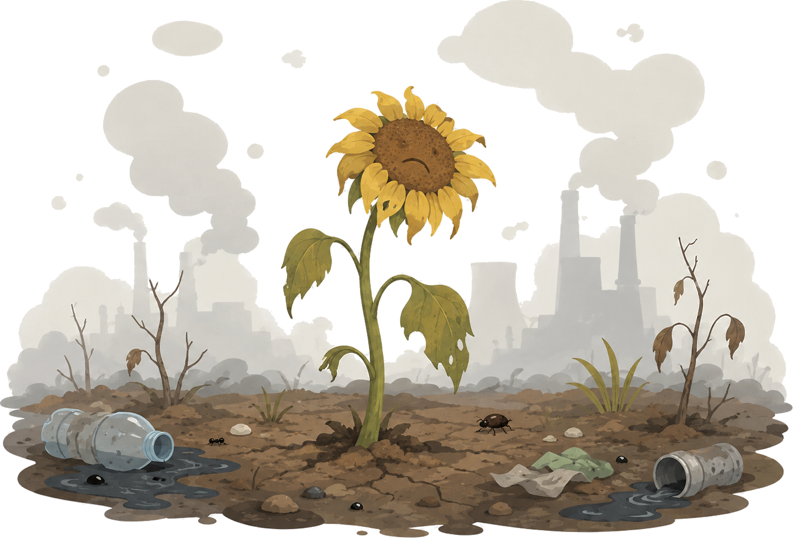

第二展区：植物伤害观察
欢迎来到小葵的体检室。污染已经在小葵身上留下了痕迹，让我们仔细观察它的受伤部位。

小葵体检报告
叶片颜色：
偏黄
叶片表面：
有斑点
根系状态：
部分发黑
光合能量：
下降
综合判断：
污染压力下的生长受损
伤害部位概览
受损环境中，消失的不只是植物健康

当污染侵袭小葵时，受到伤害的不仅仅是植物本身。整个围绕向日葵的小型生态系统都会受到连锁影响：
- 植物变弱：污染让叶片枯黄、根系受损、光合作用下降，花朵和叶片数量减少。
- 昆虫减少：花朵减少意味着花蜜和花粉来源变少，蜜蜂、蝴蝶等传粉昆虫难以觅食。
- 栖息地丧失：叶片稀疏、植株矮小，昆虫失去藏身和繁殖的场所。
- 鸟类离开：食物减少、栖息环境恶化，以昆虫和植物种子为食的鸟类也会逐渐离开。
污染就像推倒了一块多米诺骨牌——从植物开始，波及昆虫，最终影响到鸟类。一个原本生机勃勃的小生态系统，会慢慢变得寂静而单调。